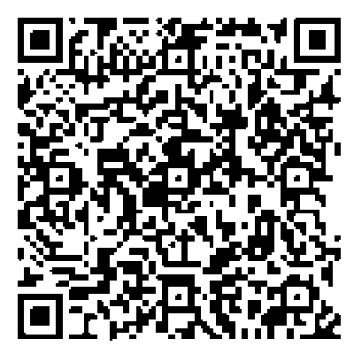
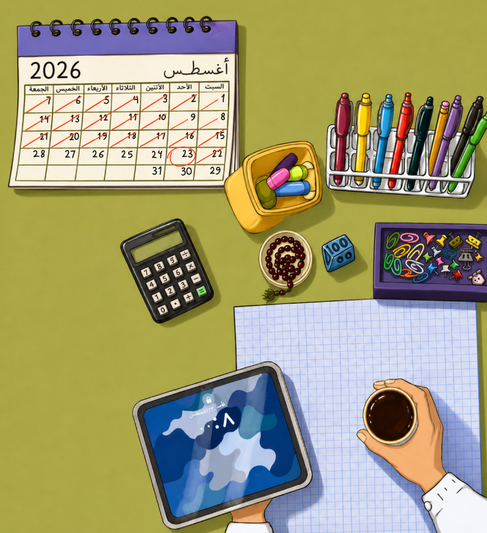

النشاط الطلابي مساحة ثرية تتجاوز الترفيه إلى بناء الوعي وتنمية الذات. عبر أندية ومبادرات متنوعة تتعلّم كيف تنظّم مهاراتك، وتعبّر عن مواهبك، وتزرع روح المبادرة وخدمة المجتمع — فتصنع أثرًا يبقى بعد انتهاء المحاضرة.
سواء كنت متجهًا إلى عمادة شؤون الطلاب، أو تبحث عن المكتبة المركزية أو كليتك، ستساعدك الخريطة التفاعلية على الوصول بسهولة.

لأن التميّز يستحق التقدير، يحظى الطالب المتميّز في جامعة تبوك بامتيازات وفرص تدعم رحلته الأكاديمية والشخصية، ليصنع تجربة أثرى.
دعم الطلاب المتميّزين في المشاركات الخارجية وتمثيل الجامعة.
الدعم في المسابقات والترشيحات النهائية.
حاضنة ابتكار لتمويل المشاريع والأبحاث.
دعم الحصول على الشهادات المهنية عبر المركز المهني.
المشاركة في بطولات الرياضة الجامعية والإلكترونية ضمن الاتحاد السعودي للرياضة الجامعية.
مساحة حيوية تعرض فيها الأندية الطلابية أنشطتها ومبادراتها خلال أسبوع المستجدين؛ فرصة لتكتشف اهتماماتك، وتتعرّف على الفرق، وتنضمّ إلى ما يناسبك.
مرشدون جامعيون يشاركونك تجاربهم ويقدّمون نصائح عملية تساعدك على التكيّف مع الحياة الجامعية، والإجابة عن أسئلتك الأكاديمية والمهارية.
عرض مسرحي يصوّر مواقف من الحياة الجامعية بأسلوب ممتع وهادف، يجمع بين الترفيه والرسائل التوعوية.
جلسات متنوّعة تلبي احتياجات الطلاب: لقاءات حوارية مع مختصّين، وجلسات أكاديمية عن التخصّصات، وجلسات مخصّصة لطلاب المنح وذوي الإعاقة — لتكون التجربة الجامعية شاملة للجميع.
قد يبدو الأسبوع الأول خفيفًا لكنه يرسم الفصل كاملاً. وكل مهمة تنجزها اليوم، هي عبء أقل تحمله غدًا.
ليس السؤال دليلًا على الجهل، بل رغبة في الفهم. وكل إجابة تحصل عليها اليوم، تختصر عليك كثيرًا من التردد.
لا تجعل كتبك لا تعرفك إلا ليلة الاختبار. دقائق قليلة بعد كل محاضرة قد تغنيك عن ساعات طويلة من القلق.
درجاتك جزء من رحلتك لكنها ليست الرحلة كلها. شارك، تعلّم، واصنع لنفسك ذكريات تستحق أن تُروى بعد التخرج.
المهام الجامعية لا تتراكم فجأة بل تتسلل بهدوء. وما تكتبه في جدولك اليوم، لن يطاردك غدًا.
قالوا إن الجامعة مرحلة صعبة، مليئة بالعقبات، ولم يقولوا إنها رحلة يتعاقب فيها العسر واليسر، وتُصنع فيها الحكايات بينهما.
وقالوا: لا تصدّق أحدًا، فالكل سيستغلك؛ ولم يقولوا إنك ستجد فيها أناسًا يحبون العطاء، ويبذلون من وقتهم وجهدهم ما يجعل أيامك أيسر وأجمل.
وقالوا إن الجامعة ليست إلا آيبادًا وقهوةً وروتينًا مملًا، ولم يذكروا أنها مساحة واسعة لاكتشاف ذاتك، وصقل مهاراتك، وبناء شخصيتك بعيدًا عن مقاعد الدراسة.
قالوا الكثير، فلا تجعل ما قيل لك يرسم تجربتك قبل أن تعيشها. لا تكن معلّقًا في مهبّ الأقوال، بل خض تجربتك بنفسك، واصنع قصتك بطريقتك، وكن أنت من يمسك بدفّة سفينته، ويوجهها نحو المرفأ الذي ينشده.

مساحة مُخصّصة لتأطير البدايات؛ دوّن فيها أهدافك للسنة الجديدة، وأبرز النصائح والإلهامات التي استوقفتك خلال أسبوع المستجدين، ولا تنسَ كتابة رسالة تشجيعية لنفسك المستقبلية تقرأها بفخر عند نهاية رحلتك في جامعة تبوك.